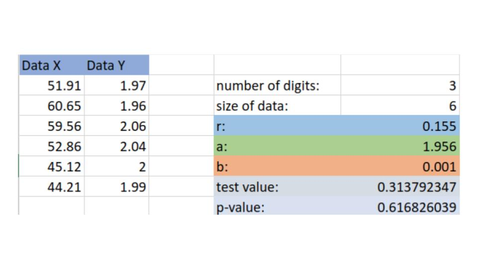

Testing
Correlation Coefficients
Example
The average gasoline price per gallon (in cities) and the cost of a barrel of oil are shown for a random selection of weeks in 2015. Is there sufficient evidence to conclude a strong linear relationship between the variables, with a significance of \(\alpha=0.05\)?
| Oil ($) | 51.91 | 60.65 | 59.56 | 52.86 | 45.12 | 44.21 |
| Gasoline ($) | 1.97 | 1.96 | 2.06 | 2.04 | 2.00 | 1.99 |
Step 1:
We count the number of pairs. We see that we have chosen 6 weeks.
Step 2:
We enter our data into the correlation calculator.

We see that we get a p-value of 0.6168, i.e. when we assume our null hypothesis (that \(\rho=0\) that there is no linear relationship, we had approximately a 62% chance of choosing a sample with a smaller correlation score.
Step 3:
Conclusion.
Since our alternative hypothesis is \(\rho\neq0\) we are doing a two-tailed test, we see that:
\[\frac{\alpha}{2}<p=0.6168<\left(1-\frac{\alpha}{2}\right)\]
we do not reject \(H_0\) and thus we do not have enough evidence to suggest their is a strong linear relationship.